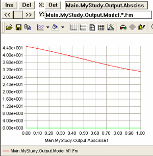

Lesson 2: Linear Muscle Recruitment¶
Caution
Old tutorial: This tutorial has not yet been updated to ver. 7 of the AnyBody Modeling System. Some concepts may have changed.
Let us begin this lesson with a physiological observation. We know that there is a metabolic cost involved in development of muscle force. Food is a limited resource for living organisms so it is likely that nature has programmed us to save muscle work in some sense. But exactly how?
When two muscles are sharing the load of one joint moment, the options seem to be:
Letting muscle 1 do the work
Letting muscle 2 do the work
Letting the two muscles share the work as we saw in the previous lesson
So we can reduce the load on one muscle, but the cost will be more work remaining for the other muscle to do. It seems that a criterion taking both muscles into account is needed. Let us just briefly recall the formulation of the muscle recruitment problem again:
The simplest imaginable choice of objective function taking the effort of both muscles into account seems to be a linear combination like this:
i.e., a linear combination of the two muscle forces, where the \(N_1\) and \(N_2\) are some choice of normalization factors. Thinking about the physiology we might quickly get the idea that it is reasonable if strong muscles do more work than weak muscles, so \(N_i\) acould be measures of the strength of each muscle. We are going to stick with that idea for the remainder of this tutorial because it actually turns out to make sense also experimentally. We can get AnyBody to work with precisely this definition by making the following additions to our study:
AnyBodyStudy MyStudy = {
AnyFolder &Model = .MyModel;
Gravity = {0.0, -9.81, 0.0};
nStep = 1000; // Lots of time steps to make it run slowly enough
InverseDynamics.Criterion = {
Type = MR_Linear;
};
};
This small addition specifies that the muscles must be recruited as a linear combination. The muscles forces are automatically normalized by the strengths. Running the analysis and plotting the result as before leaves us with this somewhat surprising result:

It seems that the weaker M2 is slacking around doing nothing and leaving all the work to the stronger M1. It turns out that we always get this type of behavior when recruiting muscles with a linear objective function. In general, this method will only recruit the minimum number of muscles to balance the system, and the chosen muscles are those that by combination of their moment arms and strengths are best suited for the purpose. While this might be a reasonable strategy, it is unfortunately totally non-physiological. It is possible to measure activity in muscles electrically, and these measurements show without a doubt that several muscles spanning the same joint share the load between them.
This type of muscle recruitment is included in AnyBody for two reasons despite being non-physiological:
For completeness. The strategy behind AnyBody is to leave decisions about physiology to the user as much as possible.
This type of analysis is excellent for identifying the important muscles in a complex system in a given posture and external load. In complex systems this can be very challenging to determine manually and the result can be useful for a variety of purposes including decisions on tendon transfer surgery.
For normal purposes, however, the linear criterion is not a good choice, and we shall therefore proceed to investigate another option in
See also
Next lesson: Lesson 3: Quadratic Muscle Recruitment.
 Fix it your self
Fix it your self